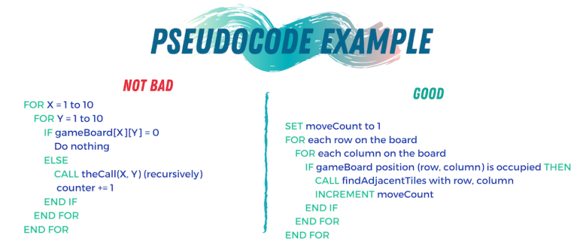
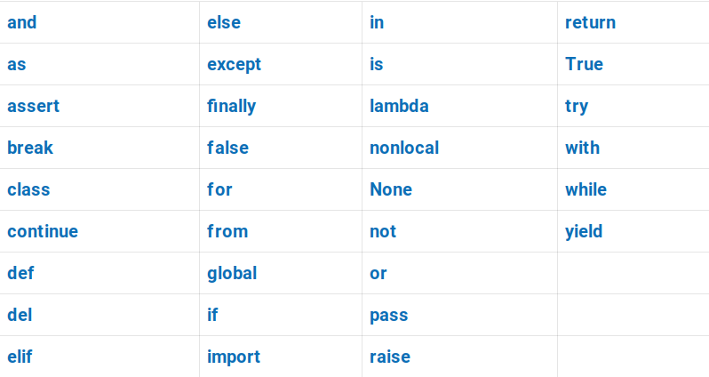
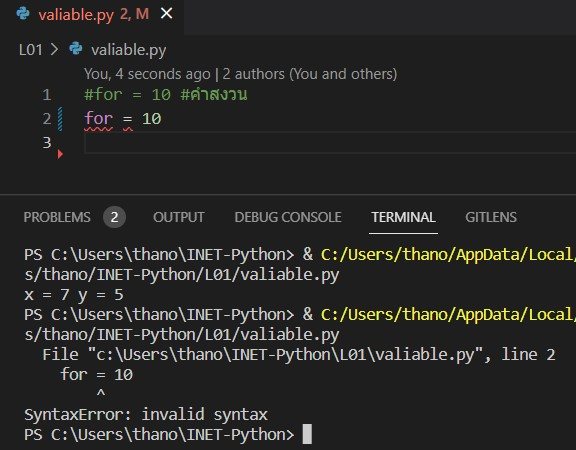
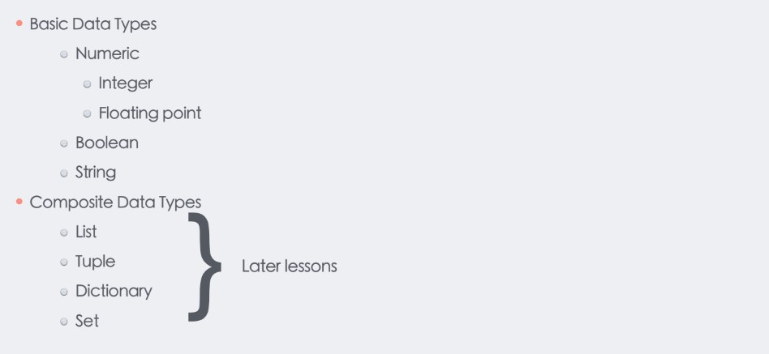
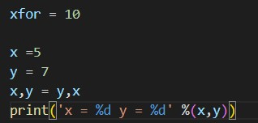
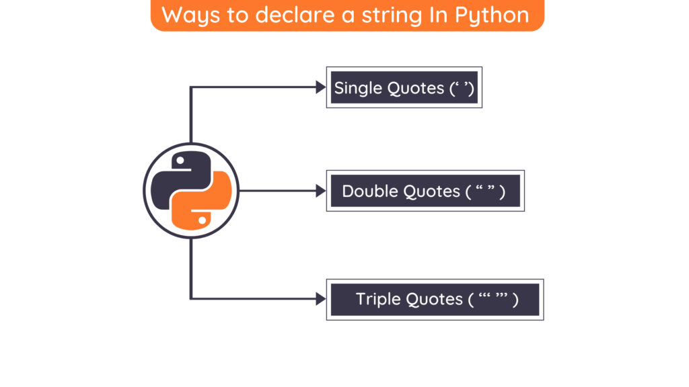
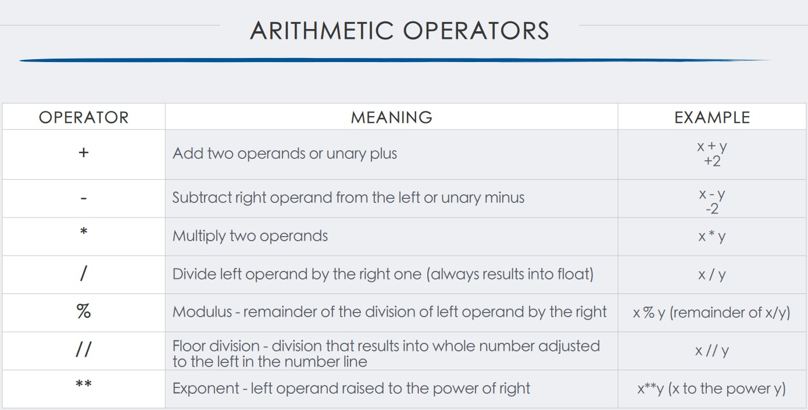
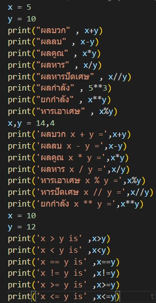
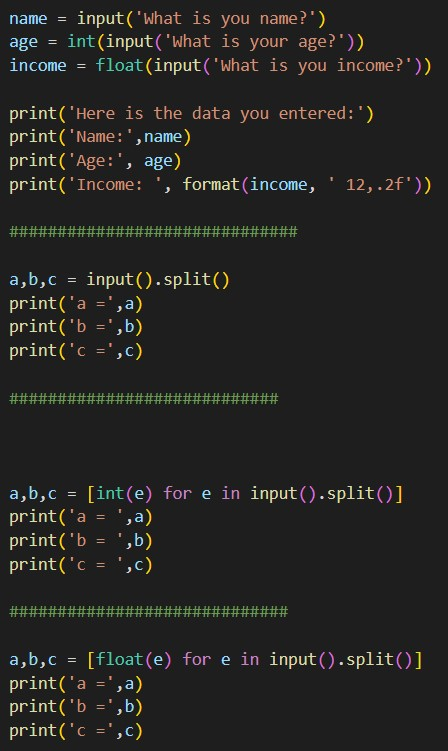
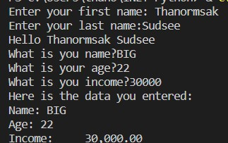

DESIGNING A PROGRAM
กระบวนการออกแบบโปรแกรมถือเป็นส่วนที่สำคัญที่สุดของ
วงจร คุณสามารถนึกถึงการออกแบบโปรแกรมเป็นรากฐานได้ ถ้าคุณสร้าง
บ้านบนรากฐานที่ไม่ดี คุณจะพบตัวเองในที่สุด
ทำงานหนักเพื่อซ่อมแซมบ้าน! การออกแบบโปรแกรมควรดูไม่
แตกต่างกัน ถ้าโปรแกรมของคุณออกแบบมาไม่ดี ในที่สุดคุณจะพบว่าตัวเอง
ทำงานหนักเพื่อแก้ไขโปรแกรม
กระบวนการออกแบบโปรแกรมสามารถสรุปได้ 2 ประการดังนี้
ขั้นตอน:
1. เข้าใจงานที่โปรแกรมจะทำ
2. กำหนดขั้นตอนที่ต้องดำเนินการเพื่อดำเนินงาน
PSEUDOCODE
คำว่า "pseudo" หมายถึงของปลอม ดังนั้น pseudocode จึงเป็นรหัสปลอม ไม่เป็นทางการ
ภาษาที่ไม่มีกฎไวยากรณ์และไม่ได้หมายถึงการคอมไพล์หรือดำเนินการ
แต่โปรแกรมเมอร์ใช้ pseudocode เพื่อสร้างโมเดลหรือ "mock-ups" ของ
โปรแกรม เนื่องจากโปรแกรมเมอร์ไม่ต้องกังวลกับข้อผิดพลาดทางไวยากรณ์ในขณะที่
การเขียน pseudocode พวกเขาสามารถมุ่งความสนใจไปที่การออกแบบโปรแกรมได้ทั้งหมด
เมื่อการออกแบบที่น่าพอใจถูกสร้างขึ้นด้วย pseudocode แล้ว pseudocode
สามารถแปลเป็นโค้ดจริงได้โดยตรง

FLOWCHART
Flowcharting เป็นอีกเครื่องมือหนึ่งที่โปรแกรมเมอร์ใช้ในการออกแบบโปรแกรม ผังงาน
เป็นแผนภาพที่แสดงขั้นตอนที่เกิดขึ้นใน a . แบบกราฟิก
โปรแกรมสังเกตว่ามีสัญลักษณ์สามประเภทในผังงาน: วงรี,
สี่เหลี่ยมด้านขนาน และสี่เหลี่ยม แต่ละสัญลักษณ์เหล่านี้แสดงถึงขั้นตอนใน
โปรแกรมตามที่อธิบายไว้ที่นี่:
วงรีซึ่งปรากฏที่ด้านบนและด้านล่างของผังงานเรียกว่า
สัญลักษณ์เทอร์มินัล สัญลักษณ์เทอร์มินัลเริ่มต้นทำเครื่องหมายจุดเริ่มต้นของโปรแกรม
และสัญลักษณ์ End terminal ทำเครื่องหมายจุดสิ้นสุดของโปรแกรม
สี่เหลี่ยมด้านขนานถูกใช้เป็นสัญลักษณ์อินพุตและสัญลักษณ์เอาต์พุต พวกเขาเป็นตัวแทน
ขั้นตอนที่โปรแกรมอ่านอินพุตหรือแสดงเอาต์พุต
สี่เหลี่ยมถูกใช้เป็นสัญลักษณ์การประมวลผล แสดงถึงขั้นตอนที่
โปรแกรมดำเนินการบางอย่างเกี่ยวกับข้อมูล เช่น การคำนวณทางคณิตศาสตร์

Draw.io
Draw.io Integration คือ Extention ใน VS code ที่ผมใจะมาแนะนำให้ใช้งานในวันนี้เนื่องจากใช้งานได้ง่ายและมีสัญญาลักษ์ของการเขียน FLOWCHART ที่ครบถ้วนสมบูรณ

VARIABLES
•Variable are:
Storage location that have a name
Name-value pairs
Reserved Word
คำต้องห้ามที่สงวนไว้ไม่สามารถใช้ได้

Reserved Word


DATA TYPE
1.Integer ข้อมูลตัวเลข
2.Floating point ข้อมูลตัวเลขทศยม
3.Boolean ข้อมูลที่มีรูปแบบแค่True หรือ False

NUMBERS
ข้อมูลตัวเลขมี2รูปแบบหลักๆคือ
BOOLEAN
ในวิทยาการคอมพิวเตอร์ ชนิดข้อมูลแบบบูล (อังกฤษ: Boolean data type) หรือ ชนิดข้อมูลแบบตรรกะ เป็นชนิดข้อมูลแบบหนึ่ง เก็บค่าได้เพียง 2 ค่าคือ ค่าจริงและค่าเท็จ ใช้ในการเก็บค่าความจริงและดำเนินการแบบพีชคณิตบูลีน ชื่อบูลนี้มาจากจอร์จ บูลซึ่งได้นิยามระบบพีชคณิตบูลีนขึ้น Hello World จากทั้ง3ภาษาคือ ภาษาJava ภาษาC++ และ ภาษาPython

STRING
fruit = ‘apple’
fruit = “apple”
string1, string2, string3 = '', 'Knife', 'Hammer Dance' Hello World จากภาษาต่างๆที่เป็นที่นิยมใช้อยู่จากอดีตจรถึงปัจจุบัน

ARITHMETIC OPERATORS
ตัวดำเนินการใน python คืออะไร?
ตัวดำเนินการเป็นสัญลักษณ์พิเศษใน Python ที่ดำเนินการ
การคำนวณทางคณิตศาสตร์หรือตรรกะ คุณค่าที่
ตัวดำเนินการดำเนินการเรียกว่าตัวถูกดำเนินการ

INPUT
ฟังก์ชันอินพุตจะคืนค่าอินพุตของผู้ใช้เป็นสตริงเสมอ แม้ว่า user
ป้อนข้อมูลที่เป็นตัวเลข ตัวอย่างเช่น สมมติว่าคุณเรียกใช้ฟังก์ชันอินพุต
พิมพ์หมายเลข 87 แล้วกดปุ่ม Enter ค่าที่ส่งคืนจาก
ฟังก์ชันอินพุตคือสตริง '87' นี่อาจเป็นปัญหาได้หากคุณต้องการใช้
ค่าในการดำเนินการทางคณิตศาสตร์ การคำนวณทางคณิตศาสตร์สามารถทำได้บน .เท่านั้น
ค่าตัวเลข ไม่ใช่สตริง


Contact Me
Integer eu ante ornare amet commetus vestibulum blandit integer in curae ac faucibus integer non. Adipiscing cubilia elementum integer. Integer eu ante ornare amet commetus.


{kind=link}
{kind=link}
{kind=link}
{kind=link}
{kind=link}
{kind=link}
{kind=link}
{kind=link}
{kind=link}
{kind=link}
{kind=link}
{kind=link}
{kind=link}